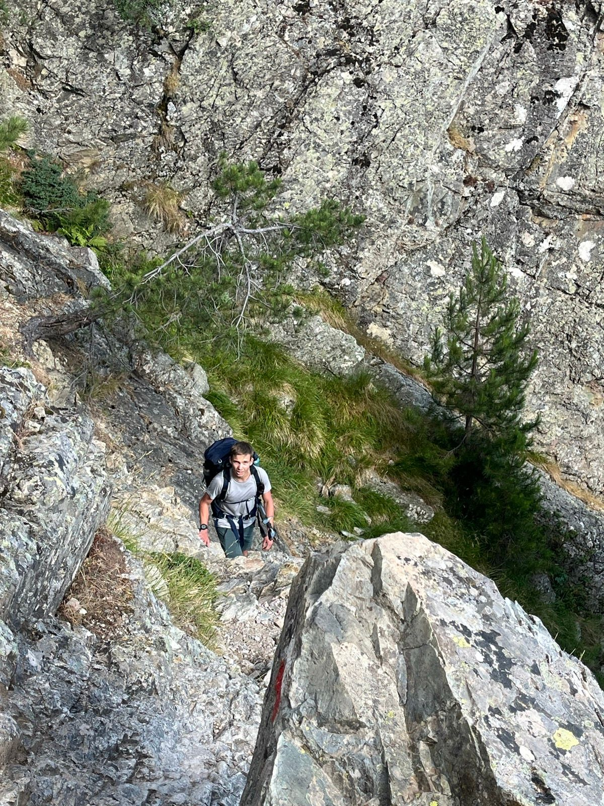

A propos de moi
Je m'appelle Alex Bonnot, je suis étudiant en licence informatique j'ai décidé avec se site web de relier mes deux passions l'informatique et la randonnées.Passionée de randonée depuis maintenant quelques années, je souhaitais partager mes aventures et mes randonnées. Je suis née en Bourgogne une région surtout connues pour ces vins et sa gastronomie. Mais la Bourgone chache aussi de belle rando dont je souhaite vous faire découvir. Entre combe, forêt, monts, plaines et champs, cette régions déborde de nature.
Mon expérience
Je randone pour m'amuser, me sentir libre, aprécier la nature et le paysage mais aussi pour me dépasser. En Bourgogne on a pas de montagnes mais on as des combes. Ces combes sont un terrains de jeu parfait pour se qui désirent des randonées plus sportifes. Je suis moi-même un grand amateur de ces millieux naturels. Les sentiers qui me vont le plus réver sont surement ceux en montages même si je n'ai plus en avoir l'expérience jusqu'a maintenant. Ma seul expérience de treking et de millieux montageux a été la partie nord du GR20 en juillet 2025.
Objectif
Se site répertori les différentes randonnées que j'ai réalisé et que je souhaite partagé. Les plus part se localise en Bourgone. Sur ce site vous trouverez des randonées familliale et sportives. Vous trouverez notaments des sentiers en forêts, en montagnes, passant par des combes, des plaines et pleins d'autres millieu natureles. Vous trouverez egalement toutes les données qu'il vous faut savoir sur le sentier. A savoir point d'eau, point d'information, lieu intéressant. Ainsi que plein d'autres information concernant la cultures et la nature de la zone visitée. Vous trouverez également une carte intéracives répertoriant toutes les randonées que je souhaite partagé. Une carte intéractives pour chaque randonées est aussi disponible.
Information
Mes randonnées suivent la pluspart du temps des sentiers balisées. Dans le cas contraire, il vous le saurat alors averti. Chaque trace GPX des sentiers sont disponible sur le site, il est vous conseillé de gardé en vue cette trace. Celle-ci peut-être importé très facilement dans des applications de randonnéese ou sur une montre conecté si vous en avez une. Certain sentier passent en forêts et donc sur des zones chassées, cela vous serat indiquer pour chaque randonées. Il vous est conseillé de toutes évidence de vous renseigné sur ce domaine.
